Aura Lab — diagramas sem autenticação
Senha em ClienteService; bandeiras em CartaoService. Modelos atuais e evolução de vendas identificados nas figuras.
Figura 1 — Aura Lab — Representação arquitetural
UML · SVG original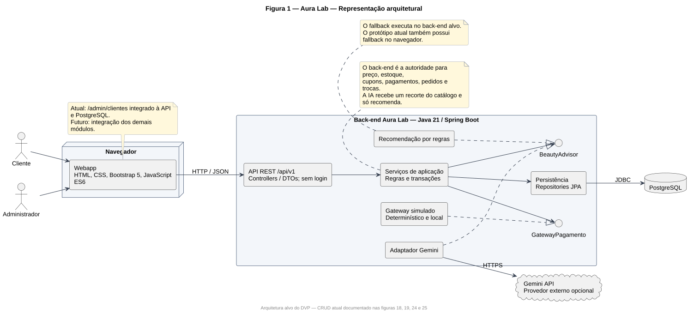
Figura 2 — Aura Lab — Caso de uso Realizar Pedido
UML · SVG original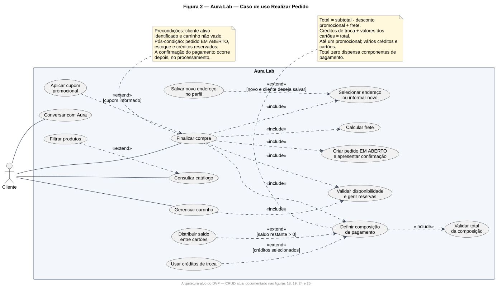
Figura 3 — Aura Lab — Casos de uso de pedidos e trocas
UML · SVG original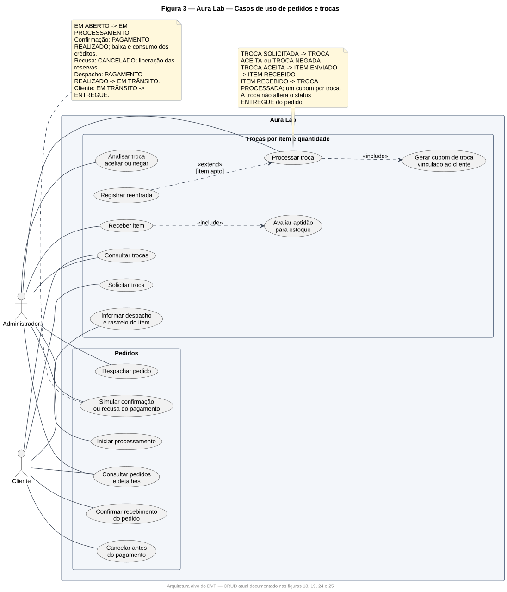
Figura 4 — Aura Lab — Caso de uso Gerenciar Produtos
UML · SVG original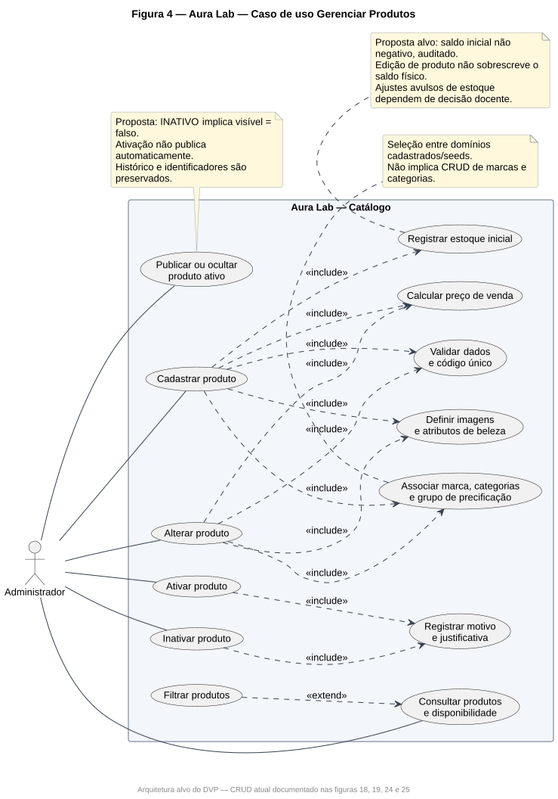
Figura 9 — Controllers, Services e colaborações
UML · SVG original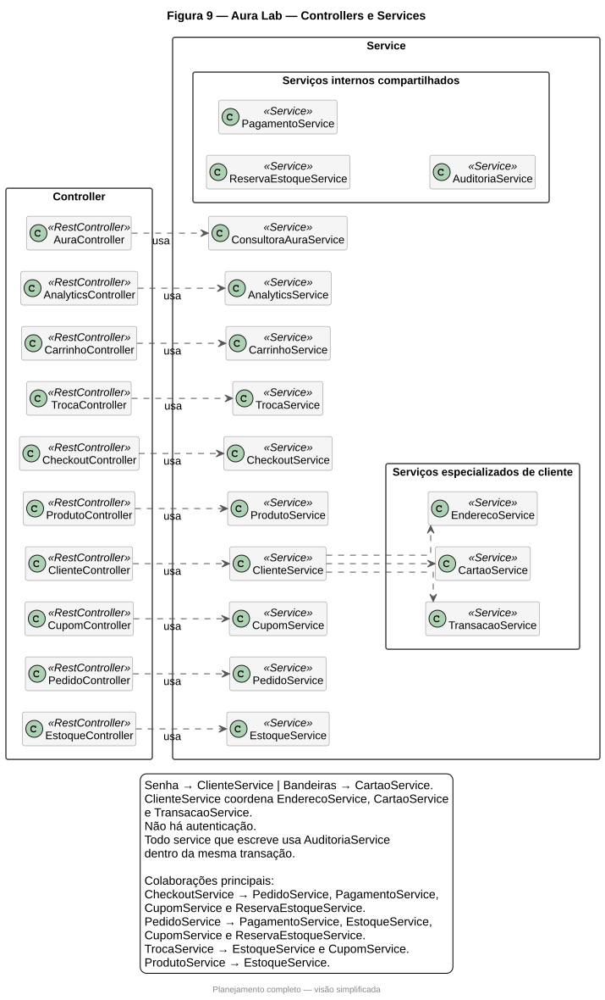
Figura 11 — Aura Lab — Camada de persistência
UML · SVG original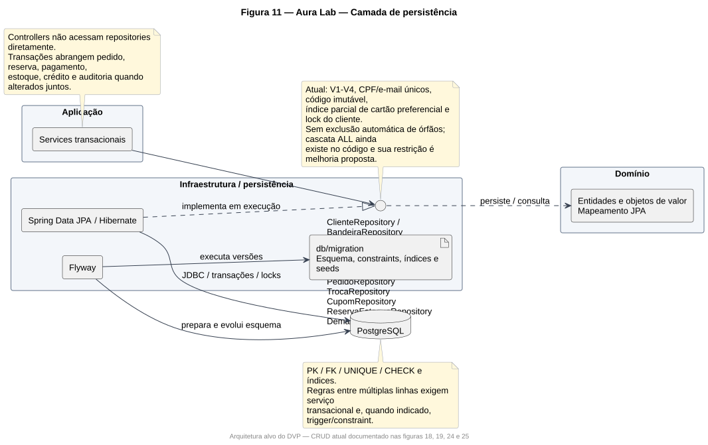
Figura 12 — Aura Lab — Sequência de finalização da compra
UML · SVG original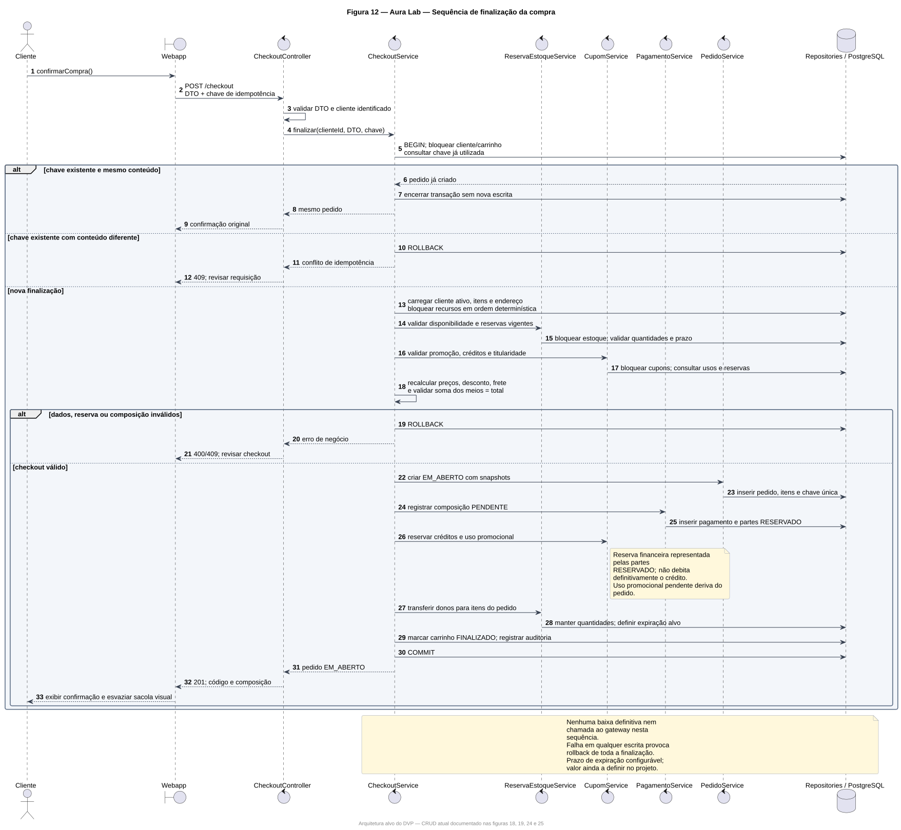
Figura 13 — Aura Lab — Sequência de gerenciamento administrativo do pedido
UML · SVG original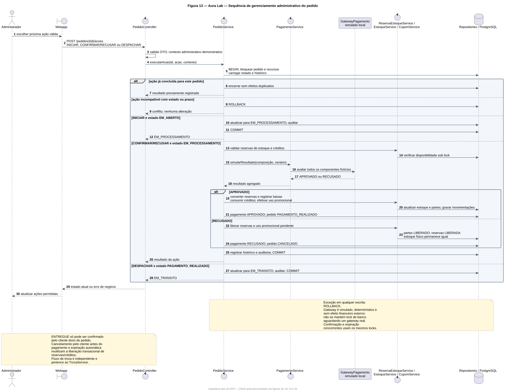
Figura 14 — Aura Lab — Sequência de cadastro ou alteração de produto
UML · SVG original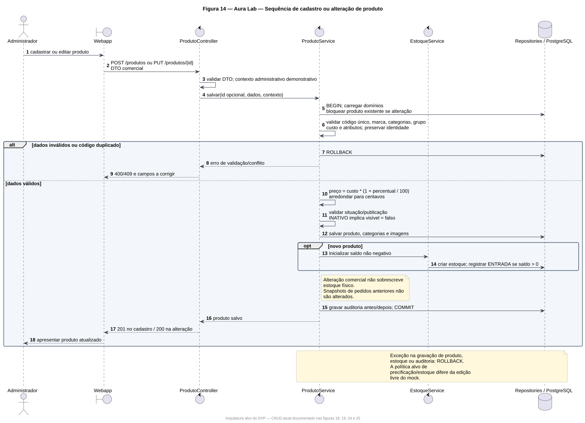
Figura 15 — Implantação local e testes isolados
UML · SVG original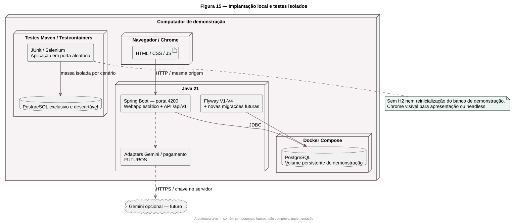
Figura 18 — Casos de uso do CRUD implementado
UML · SVG original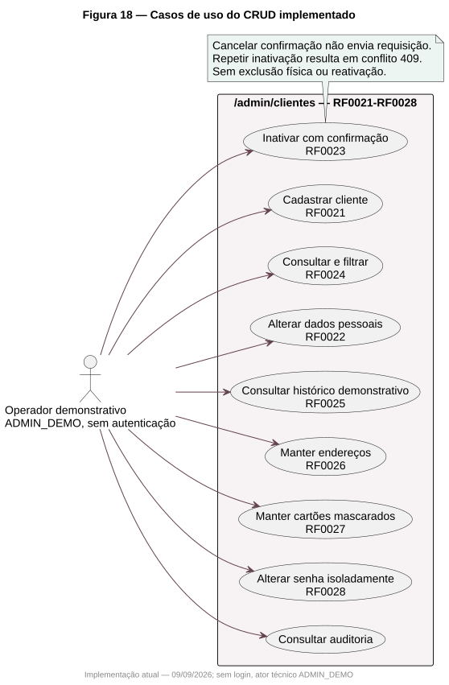
Figura 19 — Escrita do CRUD e auditoria atômica
UML · SVG original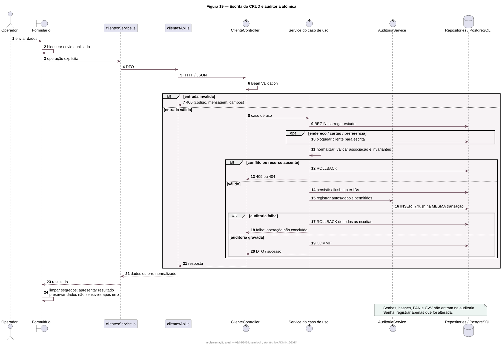
Figura 20 — Estados do pedido na solução alvo
UML · SVG original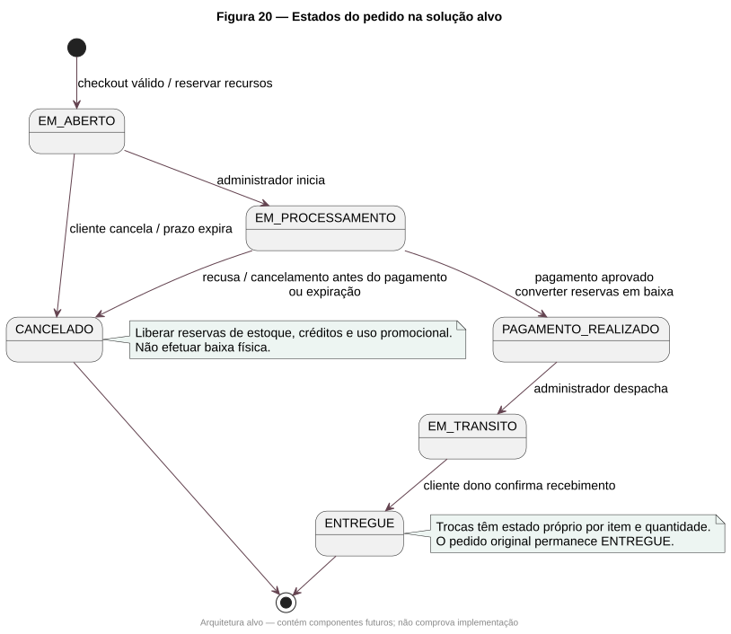
Figura 23 — Testes, padrões e evidências do CRUD
UML · SVG original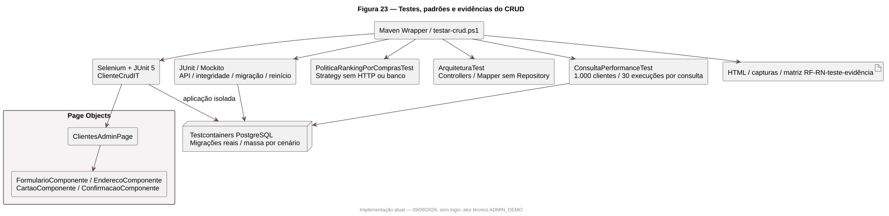